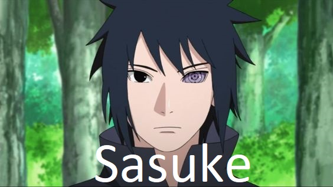
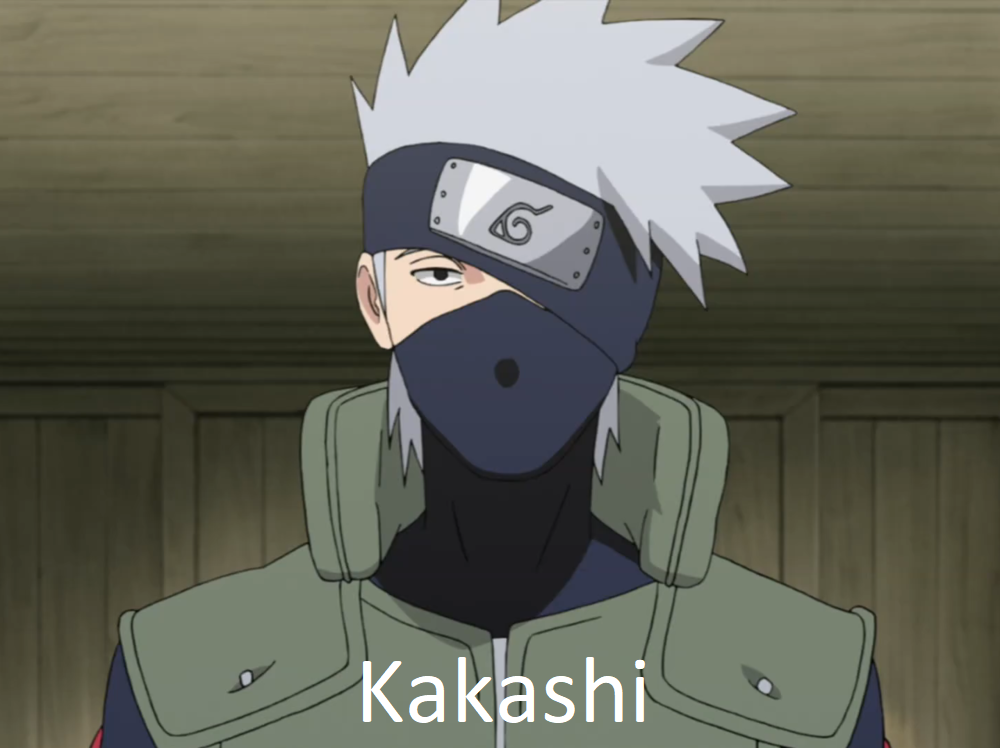
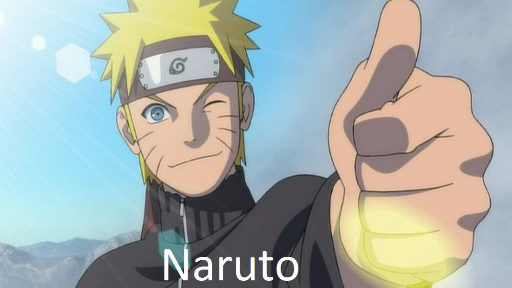
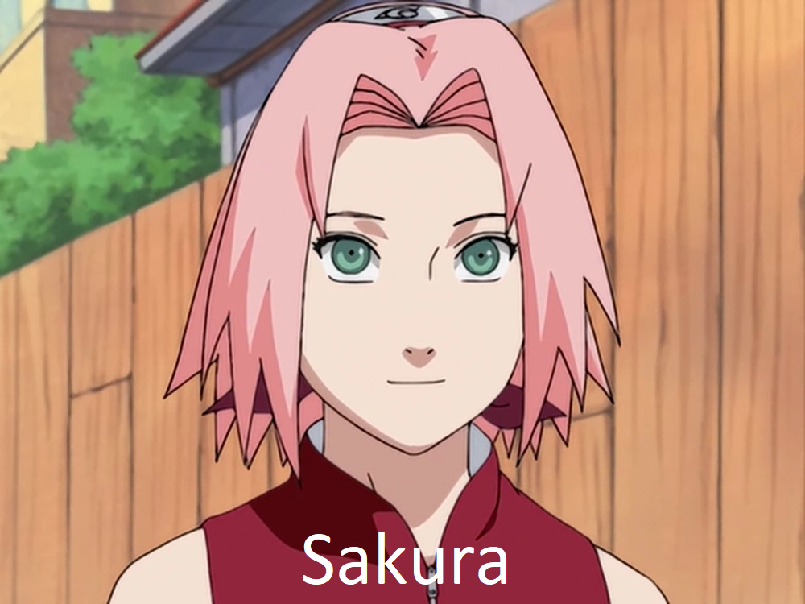

Kezdőlap
Miért éri meg elkezdni?
Rövid tartalom
Főbb szereplők
Melyik szereplő lennél a 7-es csapatből?
Inkább társaság kedvelő vagy vagy jobban szereted a magányt?
>---válasz---<
Igen, keresem az emberek társaságát.
Igen, jobban szeretek egyedül lenni.
Jobban szeretek egy társasággal lenni, de egyedül is jól érzem magam.
Jobban szeretek egyedül lenni, de társaságban is jól érzem magam.
Könnyen megtalálod az emberekkel a közös hangot?
>---válasz---<
Igen.
Nem.
Hangulatomtól függ.
Kedvenc szín?
>---válasz---<
Kék
Lila
Narancssárga
Rózsaszín
Melyik állatot választanád?
>---válasz---<
Kutya
Kígyó
Róka
Csiga
Mennyire vagy kitartó?
>---válasz---<
Kitartó vagyok, de néha kicsit elbizonytalanodom.
Sose adnám fel az állmaimat.
Bármit megteszek, hogy ne maradjak le a csapattársaimtól.
Mehet!



